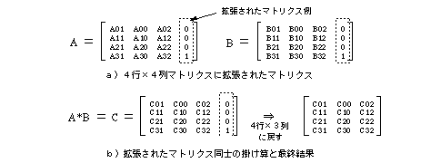

Return to previous page | Return to menu | Go to next page
void
Matrix function
Multiply the current matrix by the specified matrix
void slMultiMatrix(mtptr)
MATRIX mtptr ;
mtptr Start address of MATRIX type variable to be multiplied (output)
Multiply the current matrix by the specified matrix to create a new current matrix.
None
In SGL, the matrix is arranged in memory as 4 rows x 3 columns.
However, when performing arithmetic processing between matrices like the corresponding function, the basic concept of matrix calculation is internally expanded to a 4-row x 4-column matrix as shown below.

Reference: Chapter 5 Matrix
slMultiMatrix